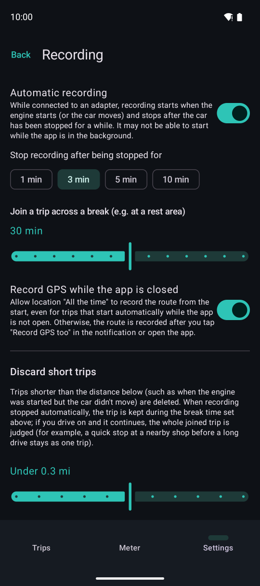
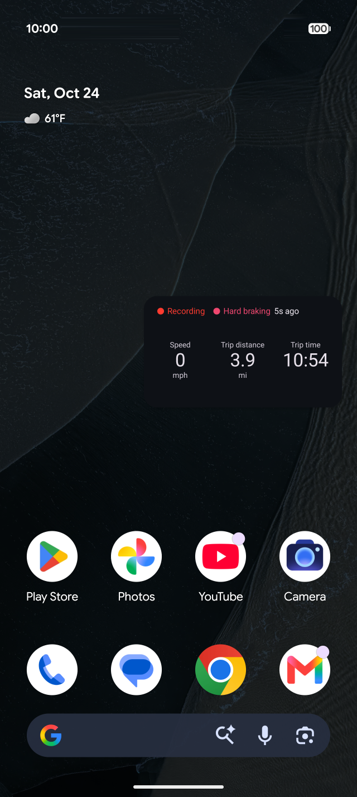

Recording
While connected to the adapter, recording starts when the engine starts and stops after the car has been stopped for a while. You do not need to keep the app open.
Automatic recording

12345Settings → Recording.
- 1Turn automatic recording on or off
- 2How long after stopping to stop recording
- 3If you drive on within this time, the trip continues as one (a break at a rest area, for example)
- 4Record GPS from the start, even for trips that start while the app is closed (needs location “Allow all the time”)
- 5Trips shorter than this are not kept
While recording, the app shows a notification (Android requires this to keep recording in the background). You can also record manually with “Start recording” and “Stop” on the meter.
GPS (location)
- With location set to “Allow only while using the app”, trips that start while the app is closed cannot use GPS. The route is recorded once you tap “Record GPS too” in the notification or open the app
- Turn on “Record GPS while the app is closed” in Settings → Recording and allow location “All the time” to record the route from the start (optional)
- You are notified when the device's location is off or a trip is being recorded without GPS
- Distance for sections without GPS comes from the speed reported by the car
Mini window
When you switch to navigation or another app while recording, the meter shows in a small window. Choose its items in Settings → Interface.

The mini window over the home screen. With Premium, it can also show events as they happen and your current address.